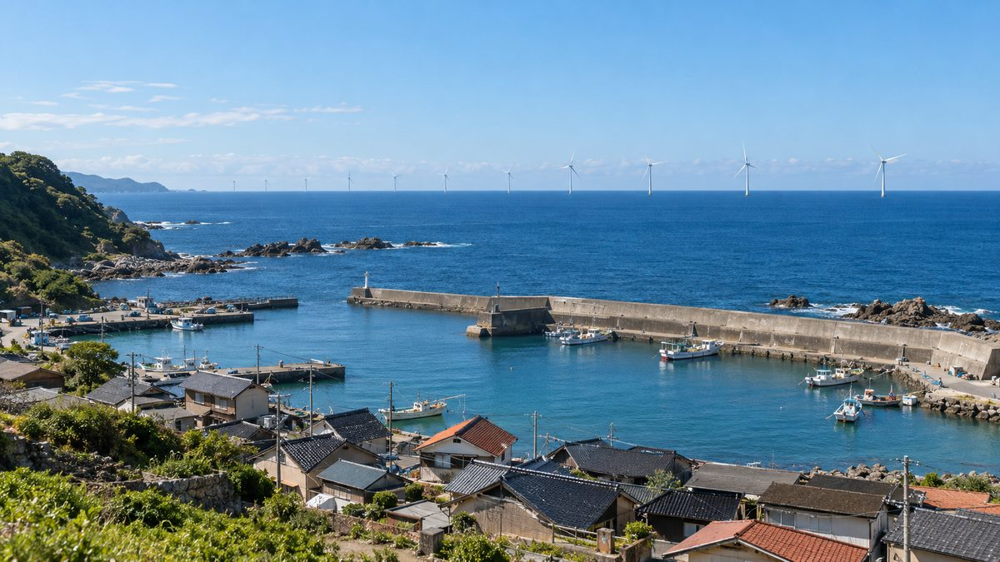

신한자산운용, 주민수익공유 펀드·에너지 인프라 성장 펀드 합계 약 5,000억 원 결성…주민 펀드 첫 투자처로 대규모 해상풍력 주민참여 사업 확보

발전단지 인근 주민·주민조합에 지분·채권 투자 자금을 대고 발전수익 일부를 배당·이자로 돌려주는 구조…주민 펀드 단독 금액, 첫 투자 사업 이름, 주민 금리·배당 조건은 발표에 없어
신한자산운용이 주민참여형 재생에너지 사업에 투자하는 '신한 주민수익공유 일반사모특별자산투자신탁 제1호'와 국내 에너지 인프라에 투자하는 '신한 에너지 인프라 성장 일반사모특별자산투자신탁 제1호'의 출자 약정을 각각 맺어, 두 펀드를 합쳐 약 5,000억 원 규모로 결성했다고 30일 밝혔다. 주민수익공유 펀드는 대규모 재생에너지 발전단지 인근 주민과 주민조합 등에 지분·채권 투자에 쓸 자금을 공급하고, 발전소가 상업운전에 들어간 뒤 전력 판매 수익의 일부를 배당이나 이자 형태로 주민에게 돌려주는 구조로, 회사는 이를 자산운용업계 첫 주민참여 전용 펀드라고 설명했다. 회사는 이 펀드의 첫 투자 대상으로 대규모 해상풍력 주민참여 사업을 확보했다고 밝혔지만, 사업 이름과 지역, 규모는 공개하지 않았다. 함께 결성한 에너지 인프라 성장 펀드는 국내 신재생에너지 발전소와 전력망 인프라에 선·후순위 대출과 지분 투자를 섞어 개발부터 건설·운영까지 자금을 대며, 회사는 발전공기업·정책금융기관이 주도하는 공공 사업과 국민성장펀드 연계 사업에 민간 자본이 일찍 들어갈 기반이 될 것으로 기대했다. 이호준 신한자산운용 인프라운용본부 전무는 주민수익공유 펀드가 발전사업의 성과를 "지역주민과 기관투자자가 함께 나누며" 에너지 전환과 지역 상생을 잇는다는 데 의미가 있다며, 앞으로 탄소배출권·항만 탄소중립·송배전망으로 투자를 넓히겠다고 말했다. 이번 발표에는 두 펀드 각각의 금액과 주민에게 적용되는 금리·배당 조건, 1인당 참여 한도가 담기지 않았으며, 앞서 신한은행은 이 회사가 조성하는 주민수익공유펀드에 500억 원을 투자하는 계약을 10월 27일 맺은 바 있다.
시민에너지 관점
두 펀드를 합쳐 약 5,000억 원이라는 큰 숫자가 나왔지만, 그 가운데 주민 몫으로 쓰일 돈이 얼마인지, 주민이 어떤 금리로 빌려 어떤 배당을 받는지는 하나도 공개되지 않았다는 점이 이번 발표의 빈칸이다. 대규모 해상풍력에 들어갈 주민 자금을 모을 길이 금융사 말고 마땅치 않다는 현실은 맞지만, 주민이 빌린 돈으로 지분을 사면 배당에서 이자를 뺀 차이만 주민 손에 남고, 그 조건을 모르는 주민은 참여할지 말지 판단할 근거조차 갖지 못한다. 주민 출자금 조달을 민간 펀드에만 맡기지 말고 시·군과 시·도가 주민조합의 출자에 보증이나 이자 지원을 붙이고 지역 금융과 사회연대금융을 함께 엮을 때, 주민은 수익을 나눠 받는 사람을 넘어 지분만큼 결정권을 가진 공동 소유자가 될 수 있다. 해상풍력 인허가와 주민참여 인정에 관여하는 정부와 지방정부는 이런 펀드가 들어가는 사업마다 주민 자금의 금리·배당·참여 한도와 의결권 구조를 공개하도록 조건으로 걸어야 한다.
출처: 메가경제 2026-10-30 박성태 원문 보기
출처: 이투데이 2026-10-30 심영주 원문 보기
新韓資産運用、住民収益共有ファンドとエネルギーインフラ成長ファンドを計約5,000億ウォンで結成…住民ファンドの初の投資先に大規模洋上風力の住民参加事業を確保
発電団地周辺の住民・住民組合に持分・債券投資資金を供給し、発電収益の一部を配当・利息で還元する仕組み…住民ファンド単独の金額、初の投資事業名、住民向け金利・配当条件は発表されず
新韓資産運用は、住民参加型の再生可能エネルギー事業に投資する「新韓住民収益共有一般私募特別資産投資信託第1号」と、国内のエネルギーインフラに投資する「新韓エネルギーインフラ成長一般私募特別資産投資信託第1号」の出資約定をそれぞれ結び、二つのファンドを合わせて約5,000億ウォン規模で結成したと30日明らかにした。住民収益共有ファンドは、大規模再エネ発電団地の周辺住民や住民組合などに持分・債券投資に使う資金を供給し、発電所の商業運転開始後に電力販売収益の一部を配当や利息の形で住民に還元する仕組みで、同社はこれを資産運用業界初の住民参加専用ファンドだと説明した。同社はこのファンドの最初の投資対象として大規模洋上風力の住民参加事業を確保したとしたが、事業名や地域、規模は公表していない。同時に結成したエネルギーインフラ成長ファンドは、国内の再エネ発電所と電力網インフラに先順位・後順位の融資と持分投資を組み合わせ、開発から建設・運営まで資金を供給するもので、同社は発電公企業や政策金融機関が主導する公共事業、国民成長ファンド連携事業に民間資本が早期に参加する基盤になると期待している。新韓資産運用のイ・ホジュン・インフラ運用本部専務は、住民収益共有ファンドは発電事業の成果を地域住民と機関投資家が共に分かち合い、エネルギー転換と地域共生を結び付ける点に意義があるとし、今後は炭素排出権、港湾の脱炭素、送配電網へと投資を広げると述べた。今回の発表には、二つのファンドそれぞれの金額や住民に適用される金利・配当条件、1人当たりの参加上限は含まれておらず、これに先立ち新韓銀行は、同社が組成する住民収益共有ファンドに500億ウォンを投資する契約を10月27日に結んでいる。
市民エネルギーの視点
二つのファンドを合わせて約5,000億ウォンという大きな数字が出たものの、そのうち住民の取り分に使われる資金がいくらなのか、住民がどんな金利で借りてどんな配当を受け取るのかは一切公表されていないことが、今回の発表の空白だ。大規模洋上風力に投じる住民資金を集める手段が金融機関のほかに見当たらないという現実はその通りだが、住民が借りたお金で持分を買えば配当から利息を引いた差額だけが手元に残り、その条件を知らない住民は参加するかどうかを判断する根拠さえ持てない。住民の出資金調達を民間ファンドだけに任せず、市・郡や道が住民組合の出資に保証や利子補給を付け、地域金融や社会連帯金融を組み合わせてこそ、住民は収益の分配を受けるだけの立場を超え、持分に見合う決定権を持つ共同所有者になれる。洋上風力の許認可と住民参加の認定に関わる政府と自治体は、こうしたファンドが入る事業ごとに、住民資金の金利・配当・参加上限と議決権の構造を公開するよう条件を付けるべきだ。
出典: メガ経済 2026-10-30 パク・ソンテ 原文を読む
出典: イートゥデイ 2026-10-30 シム・ヨンジュ 原文を読む
新韩资产运用设立居民收益共享基金与能源基础设施成长基金，合计约5,000亿韩元…居民基金首个投资对象锁定大型海上风电居民参与项目
向发电园区周边居民和居民组合提供股权、债券投资资金，并以分红、利息形式返还部分发电收益…居民基金单独规模、首个投资项目名称及居民利率和分红条件均未公布
新韩资产运用30日表示，已分别签署投资居民参与型可再生能源项目的"新韩居民收益共享一般私募特别资产投资信托第1号"和投资韩国国内能源基础设施的"新韩能源基础设施成长一般私募特别资产投资信托第1号"的出资约定，两只基金合计规模约5,000亿韩元。居民收益共享基金向大型可再生能源发电园区周边居民和居民组合等提供用于股权、债券投资的资金，在发电站投入商业运行后，把部分售电收益以分红或利息形式返还给居民；公司称这是资产管理行业首只居民参与专用基金。公司表示已将大型海上风电居民参与项目确定为该基金的首个投资对象，但未公开项目名称、地区和规模。同时设立的能源基础设施成长基金结合优先、次级贷款与股权投资，为韩国国内新能源发电站和电网基础设施提供从开发到建设、运营的全周期资金；公司期待它能为民间资本尽早参与发电国企和政策性金融机构主导的公共项目以及国民成长基金联动项目打下基础。新韩资产运用基础设施运用本部专务Lee Ho-jun表示，居民收益共享基金的意义在于让地区居民与机构投资者共同分享发电项目成果，把能源转型与地区共赢连接起来，今后将把投资扩大到碳排放权、港口碳中和和输配电网等领域。此次公告没有包括两只基金各自的规模、适用于居民的利率和分红条件以及每人参与上限；此前，新韩银行已于10月27日签约，向该公司设立的居民收益共享基金投资500亿韩元。
市民能源视角
两只基金合计约5,000亿韩元，数字虽大，但其中有多少用于居民份额、居民以怎样的利率借款、能拿到怎样的分红，全都没有公开，这是此次公告的空白。要为大型海上风电筹集居民资金，除了金融机构之外确实缺少其他渠道；但居民若用借来的钱购买股权，手里只剩分红减去利息后的差额，而不了解这些条件的居民连判断是否参与的依据都没有。居民出资不应只交给民间基金，市、郡和道应为居民组合的出资提供担保或贴息，并结合地方金融和社会连带金融，居民才能从单纯分得收益的人，成为按股份拥有决定权的共同所有者。参与海上风电许可和居民参与认定的中央与地方政府，应把公开居民资金的利率、分红、参与上限和表决权结构，作为此类基金投入每个项目的条件。
来源: Mega经济 2026-10-30 Park Seong-tae 查看原文
来源: Etoday 2026-10-30 Sim Young-joo 查看原文
Shinhan Asset Management closes resident profit-sharing and energy infrastructure funds totaling about 500 billion won, securing a large offshore wind resident-participation project as the residents' fund's first investment
The fund supplies money for equity and bond stakes to residents and resident associations near large power complexes and returns part of the power revenue as dividends or interest; the residents' fund's own size, the name of its first project and residents' rate and dividend terms were not announced
Shinhan Asset Management said on October 30 that it has signed capital commitments for two private funds, the "Shinhan Resident Profit-Sharing Private Special Asset Investment Trust No. 1," which invests in resident-participation renewable energy projects, and the "Shinhan Energy Infrastructure Growth Private Special Asset Investment Trust No. 1," which invests in domestic energy infrastructure, closing them at about 500 billion won combined. The resident profit-sharing fund supplies residents and resident associations living near large renewable power complexes with money for equity and bond investments, and once a plant starts commercial operation, returns part of the electricity sales revenue to them as dividends or interest; the company described it as the asset management industry's first fund dedicated to resident participation. The company said it has secured a large offshore wind resident-participation project as the fund's first investment, but did not disclose the project's name, location or size. The energy infrastructure growth fund, formed at the same time, combines senior and subordinated loans with equity to finance domestic renewable power plants and grid infrastructure from development through construction and operation, and the company expects it to give private capital an early entry into public projects led by state-run power companies and policy finance institutions as well as projects linked to the National Growth Fund. Lee Ho-jun, executive director of the company's infrastructure investment division, said the resident fund matters because local residents and institutional investors share the results of power projects together, linking the energy transition with local prosperity, and that the company will expand into carbon credits, port decarbonization and transmission and distribution grids. The announcement did not give the size of each fund, the interest and dividend terms for residents or any per-person participation limit; earlier, on October 27, Shinhan Bank signed a contract to invest 50 billion won in the resident profit-sharing fund being set up by the company.
Citizen Energy View
The two funds add up to a large figure of about 500 billion won, yet nothing was disclosed about how much of it will go to residents' stakes, what interest rate residents will borrow at or what dividends they can expect, and that is the gap in this announcement. It is true that there are few ways other than financial institutions to raise residents' money for large offshore wind farms, but when residents buy stakes with borrowed money only the dividend minus the interest stays with them, and residents who do not know those terms have no basis for deciding whether to take part. Rather than leaving residents' capital to private funds alone, cities, counties and provinces should back resident associations' investments with guarantees or interest support and bring in local and social and solidarity finance, so that residents become co-owners with decision-making power in proportion to their stakes rather than mere recipients of a revenue share. The central and local governments involved in licensing offshore wind and recognizing resident participation should make it a condition that every project such funds enter discloses the interest rate, dividends, participation limits and voting structure of residents' money.
Source: Mega Economy 2026-10-30 Park Seong-tae Read the original
Source: Etoday 2026-10-30 Sim Young-joo Read the original